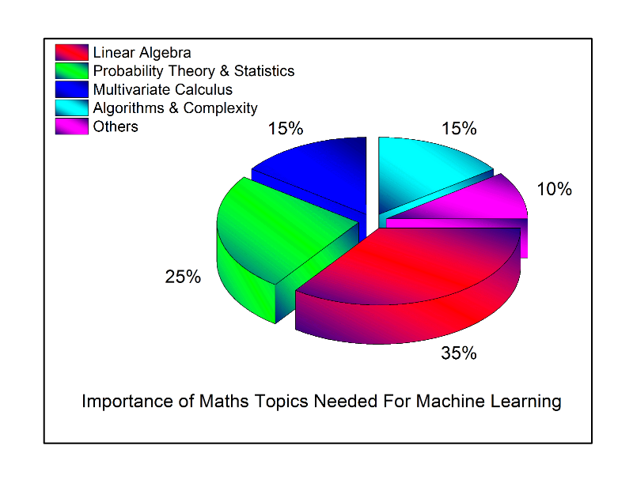

Overview
The purpose of this section is to introduce you to some of the math topics that are used when making driverless cars, and where possible, the ways in which they are used
Reinforcement learning
 An estimation of the different topics that go into reinforcement learningThe graph above, taken from towardsdatascience.com gives a very rough estimate of how often various maths topics are used in machine learning (an umbrella term that includes reinforcement learning).
In order to keep things brief, we will only look at the 2 most commonly used maths areas (according to the graph) which are Linear Algebra and Statistics.
Linear algebra
Linear algebra is the branch of mathematics that deals with linear equation such as 
In essence, machine learning as a whole is data intensive. This is because machine learning algorithms aren't very effective unless they are trained using lots of data sets. And linear algebra allows us to easily and quickly understand and manipulate this data when training an autonomous device.[1]
An important part of linear algbra which is used in Machine learning is the concept of Tensors (from which Google got the name for TensorFlow)
Tensors
A tensor is the basic building block of modern machine learning. At its core it’s a data container. Mostly it contains numbers. Sometimes it even contains strings, but that’s rare. We can visualize the various types of tensors like this[2]

0D Tensors/Scalars
Any number that goes into a tensor is called a "scalar" In fact you can have a single number tensor, which we call a 0D tensor, aka a tensor with 0 dimensions. It’s nothing more than a bucket with a one number in it. Imagine a bucket with a single drop of water and you have a 0D tensor.
1D Tensors/Vectors
In programming, this is the same as an array. You can also think of a 1D tensor as a vector. Tensors are defined by how many axes they have in total. A 1D tensor has exactly one axis.
2D Tensors/Vectors
This can be thought of as a matrix. We can visualize this as a grid of numbers with rows and columns.Those columns and rows represent two axes. A matrix is a 2D tensor, meaning it is two dimensional, aka a tensor with 2 axes.
3D Tensors/Vectors
Often we have to store a number of examples of 2D tensors in their own bucket, which gives us a 3D tensor. You can therefore think of a 3D tensor as a cube.
n-dimensional Tensors
We can keep stacking cubes together to create bigger and bigger tensors to encode different types of data - 4D tensors, 5D tensors and so on up to N. In laymans terms, N is another way of defining an unknown number of additional units in a set that continues up to an unknown point. It could be 5, 10 or a zillion.
Data that is usually stored in different types of tensors
-
3D = Time series Medical scans, for instance, can be encoded with the following fields: (time, frequency, channel)
Now if we had multiple patients with EEG scans, that would become a 4D tensor, like this:
(sample_size, time, frequency, channel) -
4D = Images Why 4D? An image is typically represented as
[width, height, color_depth] = 3D. But we don’t usually work with a single image or document in machine learning. We have a set. We might have 10,000 images of tulips, which means we have a 4D tensor, like this: [sample_size, width, height, color_depth] = 4D -
5D = Videos Because a video can be represented by the following paramaters:
(sample_size, frames, width, height, color_depth)
Summary
Linear algebra is an important part of machine learning. Data is needed in order to train models, and using tensors allows us to store, process and manipulate the data using vector algbra.Probability Theory & Statistics
A few examples are combinatorics, random variables, variance and expectation, and sampling methods.
Machine learning is all about predictive modelling: creating models with the intention of making predictions. These models are based on data which needs to be collected, by using a sampling method. Typically used sampling methods include ‘simple random sampling’, ‘systematic sampling’, ‘stratified sampling’, and often used in practice, ‘diversity-based sampling’.
Let's look at diversity based sampling. It is normally used in machine learning when the dataset has lot of similar data items. It doesn't make sense to train a model using similar data multiple times because it takes extra time and no new information is gained. Diversity-based sampling methods solve this problem and thus increase the efficieny in the training process by removing very similar data items in the data set. Because of this, the training time will be reduced contributing to an overall lower time needed to reach the solution. Additionally, the training set after applying 'diversity-based sampling' is much more typical and is able to represent features of the data better.[3]
Summary
Although this was a very brief overview that looked at only 2 examples, it serves to show the important role that maths plays in machine learning, and the examples should help you appreciate some of the many maths concepts that are used when building autonomous cars that use reinforcement learning.
Sources